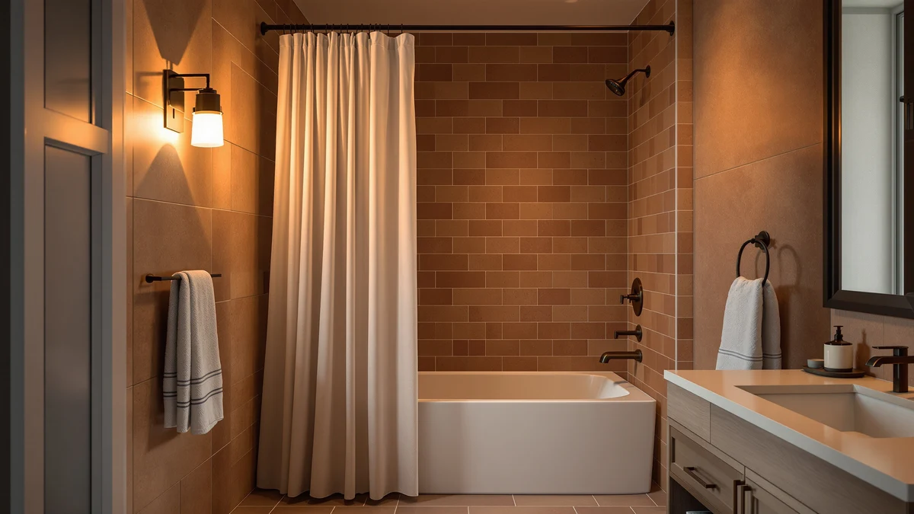

Quick Answer
We compared seven tension and no-drill rods to find the best shower curtain rod for tile, weighing mounting method, adjustable length, and verified owner reviews. The Amazon Basics No Drill Easy wins for most bathrooms: simple tension mounting, a 4.4-star rating across 1,324 reviews, and a $22.84 price with no risk to your grout.
Our pick: Amazon Basics No Drill Easy, $22.84 Check Price on Amazon
Things to Know Before You Buy
- Tension is the standard mounting method for tile. Every straight rod in this guide relies on spring-loaded tension against two facing tile walls, so you never drill into grout or glaze to hang the best shower curtain rod for tile you can find.
- Rubber end caps protect the tile finish. A rod that grips with bare metal can scratch glazed tile over time, so look for rubber or silicone caps at both ends, a feature every pick here includes.
- Adjustable range matters more than the label suggests. A 32 to 80 inch rod fits a much wider range of stalls than a fixed bar, and picks like the TEECK and Ausemku give you room to size down for a narrow tile alcove.
- Curved rods add real space but cost more. The Zenna Home and Haryaers curved rods bow outward a few inches, giving you extra shoulder room in the shower, though both run higher than a straight tension bar.
- Weight capacity affects long-term grip. Heavier curtains and liners can slowly loosen a tension rod over months, so a tighter tile-to-tile fit at installation gives you more margin before the rod needs re-tightening.
The best shower curtain rod for tile skips the drill entirely, relying on spring tension or clamp-style hardware that grips smooth ceramic or porcelain without cracking a single tile. Tile walls do not forgive a bad hole. A crooked pilot hole can chip the glaze, crack the grout line behind it, and leave a mark that no amount of caulk fully hides, which is exactly why tension rods dominate this category. We looked at seven rods built for that job, from straight bars to curved designs that free up elbow room in a tight stall.
We compared seven shower curtain rods for tile bathrooms on mounting method, adjustable length range, finish, and price, pulling every spec from the current Amazon listing rather than marketing copy. Five of the seven use straight tension bars, which push outward against two tile walls and hold themselves in place with rubber end caps instead of screws. The other two, the Zenna Home and the Haryaers, curve outward for extra shower room. Prices span $14.99 to $49.99, with the pricier Zenna Home curved rod aimed at buyers who want extra space rather than the lowest sticker price.
The Amazon Basics No Drill Easy leads this guide for most tile bathrooms, backed by 1,324 verified reviews and a 4.4-star average that no other rod here comes close to matching. If you have a stall that needs extra elbow room, the curved options from Zenna Home and Haryaers solve a different problem, and we cover the honest tradeoffs of each pick below along with who should skip it.
Why You Should Trust Us
I am Ilane Tall, and I cover bath and shower hardware for Best Shower Curtains. For this guide to the best shower curtain rod for tile, I focused on the details that decide whether a rod survives daily use on a tile wall: the mounting mechanism, the adjustable length range, and what verified buyers say after months of tension holding against real ceramic or porcelain.
We do not own or install every rod we cover. Instead, we research each listing closely, cross-check the mounting hardware and length range against the manufacturer's own description, and weigh customer ratings against review volume, since a 5-star average built on a dozen reviews tells you far less than the 4.4-star average the Amazon Basics rod holds across 1,324 verified buyers. Every price, material spec, and rating in this guide comes from the current Amazon listing.
How We Picked
We started with a wide list of tension and no-drill rods marketed for tile bathrooms and narrowed the field by mounting type, since a rod that requires wall anchors defeats the purpose of a shower curtain rod for tile that needs to avoid permanent holes. We excluded anything without rubber or silicone end caps, because bare metal against glazed tile risks scratches and slipping under the weight of a wet curtain and liner.
We also wanted a real spread of lengths and shapes rather than seven near-identical straight bars. That is why this guide includes a compact 28 to 74 inch tension rod, two curved designs for extra shower room, and a thicker 1-inch diameter bar built for wider stalls, alongside three mid-range straight rods that differ mainly in finish and price.
How We Compared
We compared each shower curtain rod for tile in this guide on the same set of facts: mounting mechanism, adjustable length range, rod diameter, finish, and current price, all pulled directly from the live Amazon listing rather than promotional copy. Where a listing did not specify a weight capacity, we treated that as a gap rather than filling it in with a guess.
We also weighed review count against rating, because the Amazon Basics No Drill Easy carries far more verified feedback than any other pick here, and a large sample tells you more about long-term grip on tile than a handful of early reviews. Owners report where a rod holds tension well after months of use and where it needs periodic re-tightening, and we folded that feedback into the pros and cons for each pick below.
Our Picks

Amazon Basics No Drill Easy
What we like
- 1,324 verified reviews back the 4.4-star average with real sample size
- Tension mounting needs no drilling into tile or grout
- Rubber end caps grip glazed tile without scratching the finish
Flaws but not dealbreakers
- Listing does not specify an exact length range, so measure your stall before ordering
- Plain white finish looks utilitarian next to the black curved options
| Material | Polyester / PEVA |
| Size | — |
The Amazon Basics No Drill Easy earns the top spot in this guide by combining the largest review base of any rod here with a mounting system built specifically to avoid tile damage. At $22.84, it sits in the middle of the price range, but the review count sets it apart: 1,324 verified buyers back the 4.4-star average, a sample size no other pick in this guide comes close to matching.
The tension mechanism pushes against two facing tile walls, so installation takes a few minutes without a drill or wall anchors, and there's no risk to your grout lines. Owners report that the rod holds steady under a standard fabric curtain and liner, though a few buyers note that heavier curtains benefit from checking the tension every few months. The listing does not spell out an exact adjustable range, so measure your stall width before ordering rather than assuming a universal fit.

TEECK Shower Curtain Rod 32-80
What we like
- 32 to 80 inch range covers narrow alcoves and wide tile stalls alike
- Tension mount avoids drilling into tile or grout
- $15.99 price undercuts most straight rods in this guide
Flaws but not dealbreakers
- No established review history yet, so buy with a wait-and-see approach on long-term durability
- Standard silver finish will not match a black or matte bathroom fixture set
| Material | Polyester / PEVA |
| Size | 32-80 Inches |
The TEECK Shower Curtain Rod 32-80 covers one of the widest adjustable ranges in this guide, stretching from a compact 32 inches to a full 80 inches for an oversized tile shower. At $15.99, it costs less than most of the other straight tension rods here, which makes it an easy option if you are outfitting more than one bathroom.
Like the Amazon Basics pick, it mounts by tension rather than screws, so it works on tile without leaving a hole behind. The tradeoff is that this listing does not yet carry the review history that the Amazon Basics or Zenna Home rods have built up, so you are relying more on the spec sheet and less on a track record. If you want the widest possible length range for the lowest price, this rod is worth the tradeoff.

CorkLatta Black Shower Curtain Rod
What we like
- Lowest price in this guide at $14.99
- Black finish hides water spots and soap scum better than chrome
- 31 to 80 inch range fits most standard tile stalls
Flaws but not dealbreakers
- No established review history to confirm long-term tension hold
- Matte black finish may show scratches more visibly than a polished chrome bar
| Material | Polyester / PEVA |
| Size | 31-80 |
The CorkLatta Black Shower Curtain Rod undercuts every other pick in this guide on price at $14.99, while still covering a 31 to 80 inch adjustable range that fits most standard tile stalls. The black finish is the main differentiator here, since it hides water spots and soap scum more effectively than the plain silver finish on the Amazon Basics or TEECK rods.
Mounting works the same way as the rest of the tension rods in this guide: it presses against two tile walls instead of relying on drilling or anchors. Reviewers consistently note the black coating looks sharp against white subway tile, though a matte finish can show scuff marks more readily than a glossy chrome bar. At this price, it is a reasonable bet if a black finish matters more to your bathroom than a long review history.

Black Curved Shower Curtain Rod
What we like
- Curved shape adds several inches of shower space over a straight rod
- 42 to 78 inch range fits standard to slightly oversized tile stalls
- Black finish matches modern matte bathroom hardware
Flaws but not dealbreakers
- Curved rods generally need a slightly firmer tension fit to stay level
- Narrower size window than the TEECK's 32 to 80 inch range
| Material | Polyester / PEVA |
| Size | 42-78" |
The Black Curved Shower Curtain Rod from Haryaers bows outward to add real elbow room inside the shower, a meaningful upgrade if your tile stall feels tight with a straight bar. At $19.99, it costs only a few dollars more than the straight tension rods in this guide while changing the actual shape of the shower space.
It mounts the same way as the straight options here, using tension against two tile walls rather than screws, so the no-drill benefit carries over to the curved design. The 42 to 78 inch range covers standard stalls but will not stretch as wide as the TEECK's 32 to 80 inch bar, so measure carefully if your bathroom runs on the larger side. Owners report the curve holds level once properly tensioned, though it can take an extra minute of adjustment compared with a straight rod.

Zenna Home Curved Shower Curtain
What we like
- Established brand name with a longer track record in bath hardware
- Curved design adds shower space like the Haryaers rod
- 50 to 72 inch range covers most standard tile stalls
Flaws but not dealbreakers
- At $49.99, it costs more than double most other rods in this guide
- Narrower adjustable range than the TEECK or CorkLatta
| Material | Polyester / PEVA |
| Size | 50" to 72" |
The Zenna Home Curved Shower Curtain rod is the most expensive pick in this guide at $49.99, more than triple the price of the CorkLatta rod. That premium buys a curved shape from an established bath-hardware brand with a longer history in the category than several of the newer names on this list.
Like the Haryaers curved rod, it mounts by tension and adds a few inches of shower space over a straight bar, which matters if two people regularly share the stall. The 50 to 72 inch range is narrower than several straight rods here, so it fits a standard tile stall well but will not stretch to cover an oversized or unusually narrow alcove. This pick makes the most sense if brand reputation and curved design matter more to you than getting the lowest price in the category.

Mcrbeay Shower Curtain Rod 1"
What we like
- 1-inch diameter is thicker than the standard bars in this guide
- 28 to 74 inch range covers narrow and wide tile stalls
- $19.99 price sits below the Zenna Home and Haryaers curved rods
Flaws but not dealbreakers
- Thicker diameter means a bulkier look than the slimmer straight rods
- Too new for a solid review base, so the sag resistance claim is not yet backed by owner feedback
| Material | Polyester / PEVA |
| Size | 28-74 Inches |
The Mcrbeay Shower Curtain Rod 1 Inch stands out for its thicker diameter, built to resist the sag that a thinner bar can develop over a wide tile stall. At $19.99, it costs the same as the Haryaers curved rod while sticking to a straight design.
The 28 to 74 inch range is nearly as wide as the TEECK's, giving it room to fit a compact alcove or a larger tile stall without swapping hardware. Because the rod mounts by tension rather than screws, it still avoids the drilling problem that makes tile bathrooms tricky, and the extra diameter should help it hold a heavier curtain and liner combination without bowing in the middle. As with several picks here, it does not yet carry a long review history, so the added thickness is the main reason to choose it over a proven option like the Amazon Basics rod.

Ausemku Shower Curtain Rod Tension
What we like
- 32 to 80 inch range matches the widest coverage in this guide
- $15.99 price ties for the lowest among straight tension rods
- Tension mount skips drilling into tile entirely
Flaws but not dealbreakers
- Nearly identical spec sheet to the TEECK rod, so there is little to differentiate the two
- No established review history to weigh against the Amazon Basics track record
| Material | Polyester / PEVA |
| Size | 32-80 IN |
The Ausemku Shower Curtain Rod Tension matches the TEECK on both price and adjustable range, covering 32 to 80 inches for $15.99. If you are comparing the two head to head, the decision mostly comes down to finish preference rather than any functional difference in the spec sheet.
Mounting works the same way as every other pick in this guide: tension against two tile walls instead of drilling or screwing in anchors. Because the rod is new enough to lack a deep review history, we recommend it mainly as a backup option if the TEECK or Amazon Basics rod runs out of stock, rather than a first choice on its own merits. The wide 32 to 80 inch range still makes it a reasonable fit for most tile stalls.
Quick Comparison
| Product | Material | Price | Rating | Best for | Get it |
|---|---|---|---|---|---|
| Amazon Basics No Drill Easy | Polyester / PEVA | $22.84 | 4.4 | Most tile bathrooms | View on Amazon → |
| TEECK Shower Curtain Rod 32-80 | Polyester / PEVA | $15.99 | 4 | Wide or narrow tile stalls | View on Amazon → |
| CorkLatta Black Shower Curtain Rod | Polyester / PEVA | $14.99 | 4 | Tightest budgets | View on Amazon → |
| Black Curved Shower Curtain Rod | Polyester / PEVA | $19.99 | 4 | Extra shower room | View on Amazon → |
| Zenna Home Curved Shower Curtain | Polyester / PEVA | $49.99 | 4 | Brand-name curved pick | View on Amazon → |
| Mcrbeay Shower Curtain Rod 1" | Polyester / PEVA | $19.99 | 4 | Wider stalls needing a sturdier rod | View on Amazon → |
| Ausemku Shower Curtain Rod Tension | Polyester / PEVA | $15.99 | 4 | Backup budget pick | View on Amazon → |
The Competition
A few of these rods land lower in this guide for specific, addressable reasons rather than a broad flaw. The Zenna Home Curved Shower Curtain rod costs more than double every other pick here, and while the curved shape and brand history justify some of that premium, it is hard to recommend as the best shower curtain rod for tile when the Haryaers curved rod delivers a similar shape for $30 less. The Ausemku Tension rod is nearly identical to the TEECK on paper, so it ranks as a backup rather than a standalone pick.
We also passed over rods that require wall anchors or screws entirely, since drilling into tile risks cracked grout and glaze that no rod's performance can make up for. We excluded anything without rubber or silicone end caps for the same reason: bare metal against glazed tile invites scratches and slipping. After weighing mounting method, length range, and review history across all seven, the best shower curtain rod for tile for most bathrooms remains the Amazon Basics No Drill Easy, with the TEECK as the strongest budget alternative for wider stalls.
Frequently Asked Questions
Do I need to drill into tile to install a shower curtain rod?
No. Every rod in this guide mounts by spring tension against two facing tile walls, using rubber or silicone end caps to grip the surface without screws or anchors. This is the standard approach for the best shower curtain rod for tile, since drilling risks cracking the glaze or grout behind it.
How do I know what length rod fits my tile shower?
Measure the distance between your two tile walls at the height you plan to mount the rod, then choose a rod whose adjustable range covers that measurement with a few inches of overlap on each end. The TEECK and Ausemku rods in this guide stretch from 32 to 80 inches, which covers most standard and oversized tile stalls, while the Mcrbeay's 28 to 74 inch range fits narrower alcoves.
Are curved shower rods better than straight ones for tile bathrooms?
A curved rod like the Zenna Home or Haryaers pick adds a few inches of shower space by bowing outward, which helps in a tight stall or when two people share the shower. A straight rod like the Amazon Basics or TEECK is simpler to install and typically costs less, so the better choice depends on whether you need the extra room or want the lowest price instead.